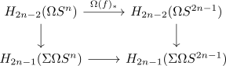
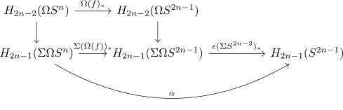
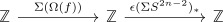
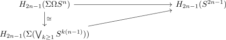
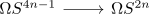

generalized hopf map is isomorphism on some cohomology
Proposition
Let $H: \Omega S^2n \rightarrow \Omega S^{4n-1}$ be the generalized hopf map for $n \geq 2$.
Then the
is an isomorphism for $l \in \mathbb{N}$
Proof
using universal coefficient Theorem for cohomology it suffices to show this is an isomorphism on homology (after having copmuted both sides) using the suspension isomorphism of singular cohomology it suffices to show that the bottom map is an isomorphism

Now postcompose with the counit

and denote the compositino with $\alpha$. Now computing the homology yields (cf. homology of the loop space of the sphere)

Here we use counit of an element in the essential image of the left adjoint is split epi so the right map is a split epi between $\mathbb{Z}$, so an isomorphism.
Therefore it suffices to show that $\alpha$ is an isomorhpism. For that we use the james splitting for a connected pointed anima

where the vertical map is an isomorphism and the right vertical map is also an isomorphism, since it is a split epi between groups abstractly isomorphic to $\mathbb{Z}$
a) case $l = 1
b) arbitrary $l$
$l = 0$
connected components
$l > 1$
Note that the map $\Omega S^{2n} \rightarrow \Omega S^{4n-1}$ is by construction as corresponding map the composition

Then under the james splitting the map
by the freudenthal suspension theorem the map
is $4n-2$ connected